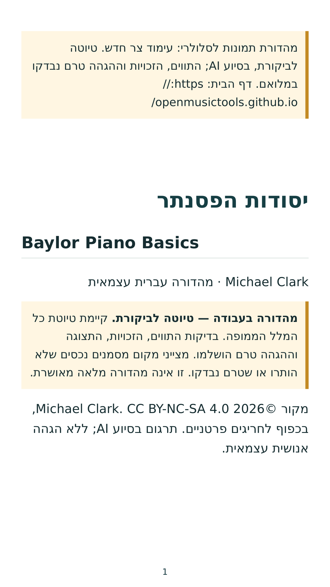
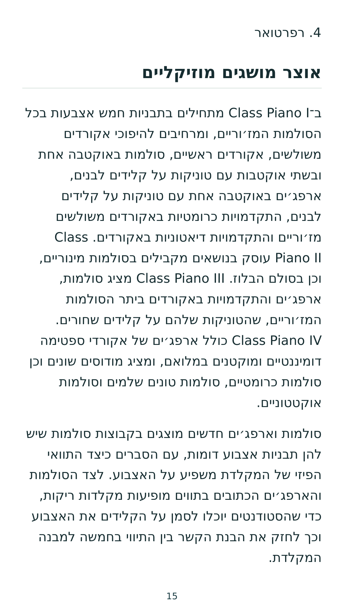
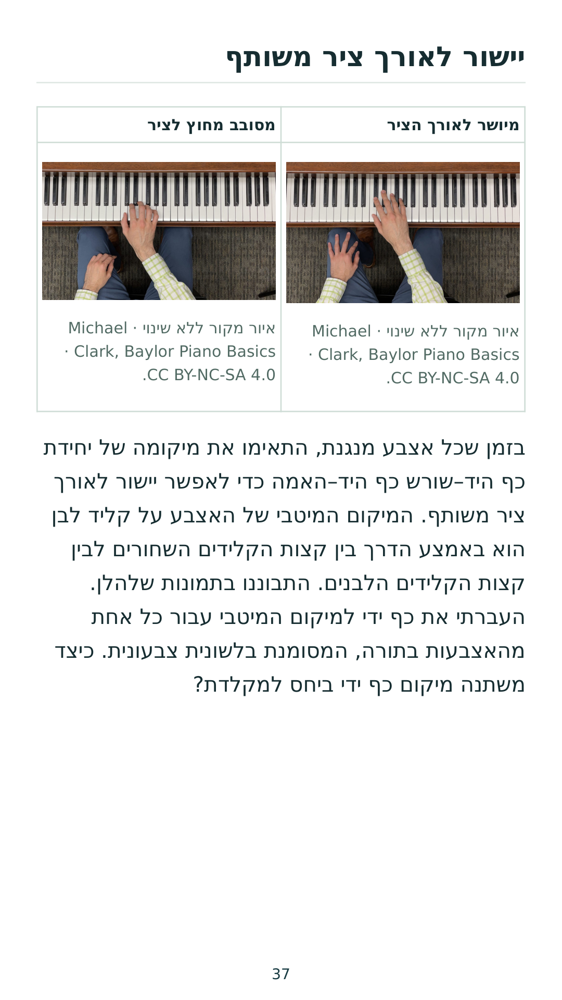
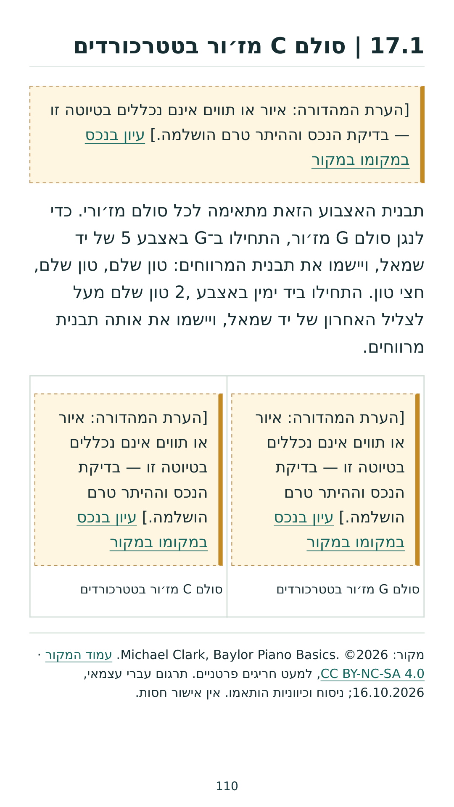
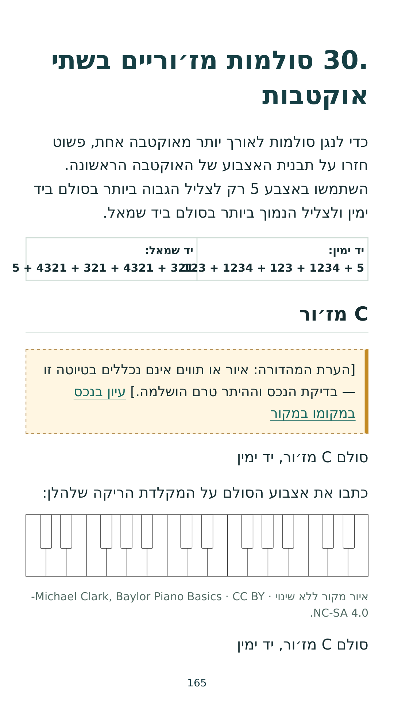
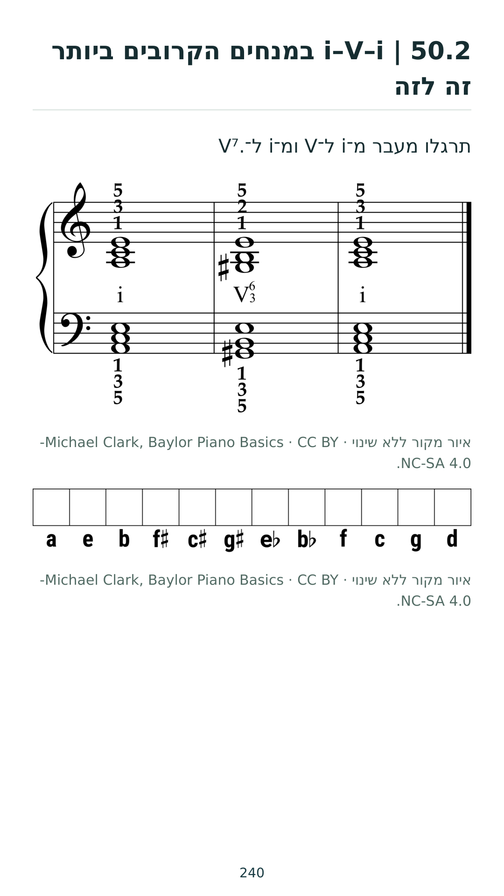
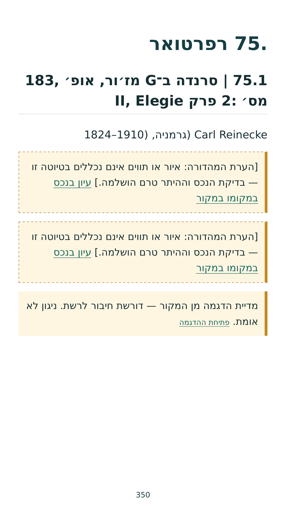
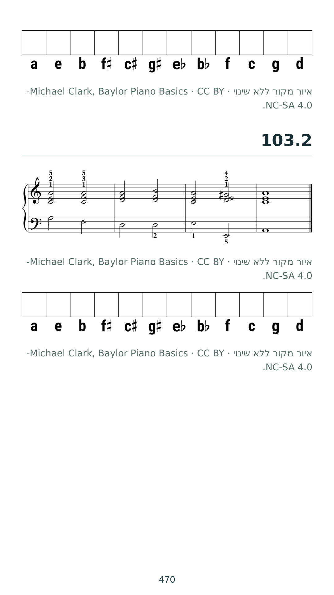
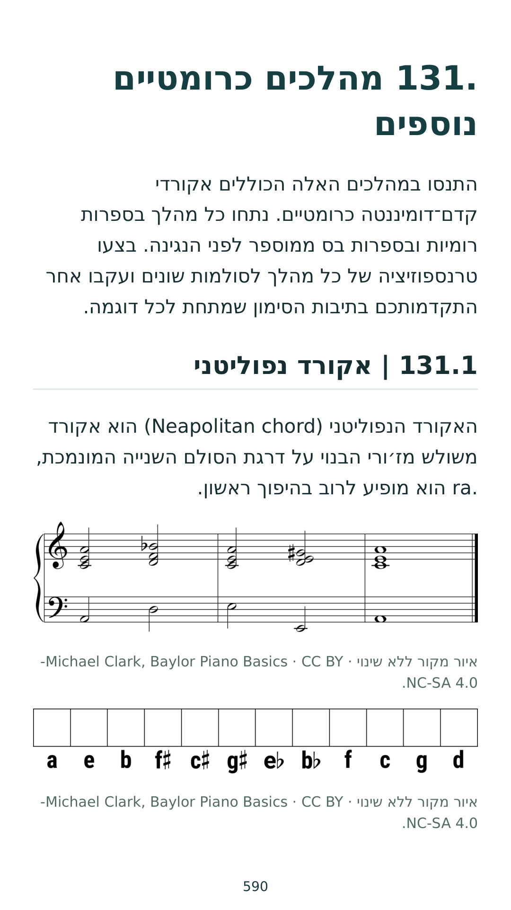
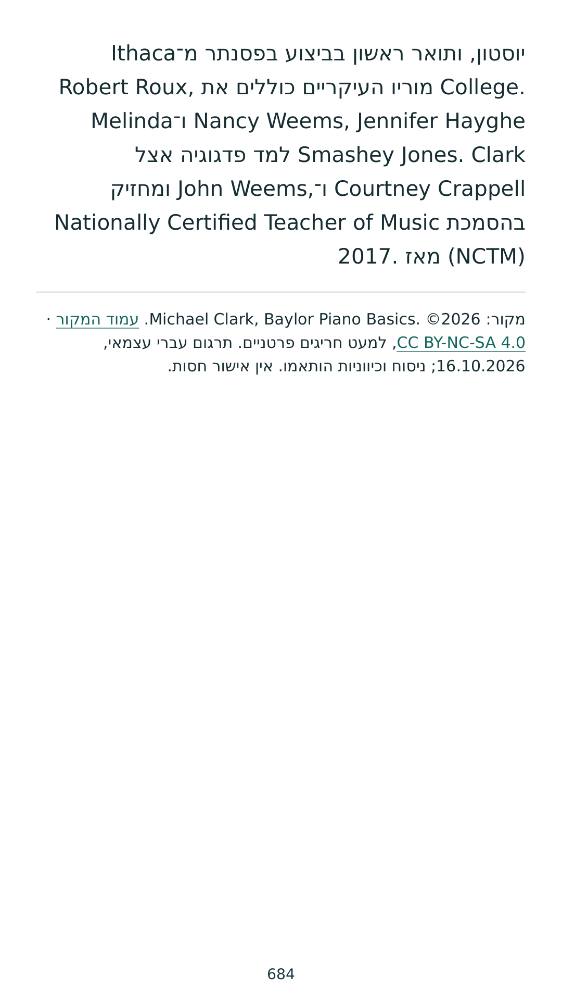

תמונות לקריאה בסלולרי
684 עמודים בעימוד צר חדש, כתמונות PNG ממוספרות. טיוטה לביקורת, בסיוע AI; הגהה מקצועית ובדיקות המוזיקה טרם הושלמו.
הורדת כל התמונות ב־ZIP · PDF בעימוד צר
לאחר חילוץ ה־ZIP אפשר לפתוח את התמונות בגלריה לפי סדר שמן. הדוגמאות הבאות נבדקו חזותית; אין בכך אישור תצוגה לכל הספר.
עמוד 1
עמוד 15
עמוד 37
עמוד 110
עמוד 165
עמוד 240
עמוד 350
עמוד 470
עמוד 590
עמוד 684
©2026 Michael Clark. מהדורה עברית עצמאית בכפוף ל־CC BY-NC-SA 4.0 ולחריגים המתועדים בספר.